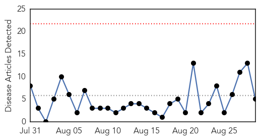
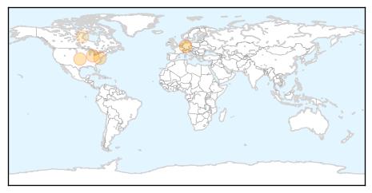
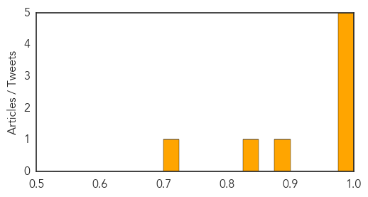

Measles
30-Day Web Trend
0 alerts, 0 warnings

30-Day Twitter Trend
0 alerts, 0 warnings

Article Locations
Article Confidences

Top Articles:
Top Tweets:
-
No tweets found for Aug 29, 2015
MERS
30-Day Web Trend
0 alerts, 0 warnings

30-Day Twitter Trend
6 alerts, 5 warnings

Article Locations

Article Confidences
Top Articles:
- 0.999
- Number of Deaths from MERS Rising in Saudi Arabia
- 0.999
- MERS deaths threaten to put a shroud over the Hajj in Saudi Arabia
- 0.996
- Two new cases of MERS coronavirus registered
- 0.996
- Saudi Arabia sees MERS deaths surge The Nation
- 0.985
- Deaths from MERS virus surge in Saudi Arabia
- 0.892
- Ban on camel sacrifice raises questions
- 0.834
- Riyadh, Jordan each report two new MERS cases
- 0.713
- Riyadh hospitals step up efforts to combat coronavirusHealthcare
Top Tweets:
- 0.664
- AFD Blog `Saudi MOH Announces 2 Additional MERS Cases' MERS-CoV http://t.co/H9ktfYI37y